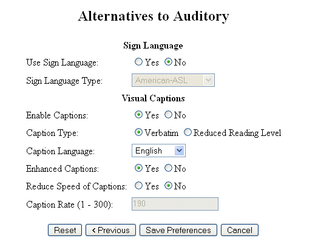
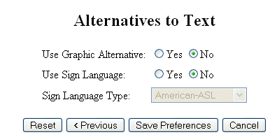
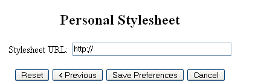
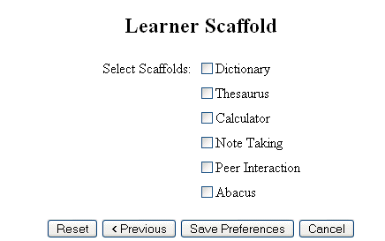

TILE Tool Kit:
The following resources are available to the learner through the TILE system:
1. Screen Enhancement Options:

2. Alternatives to Visual Options

3. Alternatives to Auditory Options

4. Alternatives to Text Options

5. Structural Presentation Options

6. Structural Navigation Options

7. Personal Stylesheet Option

8. Learner Scaffold Options
